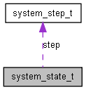

Main Page
Data Structures
Files
S
earch for
Alphabetical List
Data Structures
Data Fields
system_state_t Struct Reference
Grouping of mode and steps.
More...
#include <
system.h
>
Collaboration diagram for system_state_t:

[
legend
]
Data Fields
system_mode
mode
Stores the current mode.
system_mode
mode_last
Stores the last mode for transition steps.
system_step
step
Stores the current step of the mode.
Detailed Description
Grouping of mode and steps.
Definition at line
272
of file
system.h
.
The documentation for this struct was generated from the following file:
system.h
Generated on Fri Aug 29 13:48:10 2008 for Smarties2 by
1.5.5
 1.5.5
1.5.5